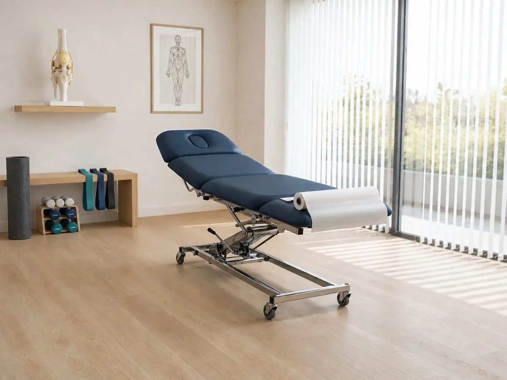

Fysiotherapie in Nijmegen: de juiste fysio voor jouw klacht
Bijgewerkt op 22 november 2026.
Nijmegen heeft tientallen fysiotherapiepraktijken. De meeste helpen je met van alles, maar een aantal heeft zich toegelegd op één soort klacht, zoals de knie, pezen of duizeligheid. Heb je een klacht die maar niet overgaat, dan kan zo'n specialist het verschil maken. Daarom zetten we de praktijken per klacht op een rij.

Zo hebben we gekozen
We lazen in november 2026 de websites van de fysiotherapeuten in onze bedrijvengids. Per klacht kozen we de praktijken die zich daar duidelijk op richten. Voor fysiotherapie heb je meestal geen verwijzing nodig, maar de vergoeding hangt af van je aanvullende verzekering. Vraag dat vooraf na.
Sportblessures, knie en pezen
KnieCare: alleen maar knieën
De fysiotherapeuten van KnieCare behandelen alleen knieklachten, van een gescheurde kruisband of meniscus tot artrose en revalidatie na een nieuwe knie.
Naast oefenen krijg je uitleg over je knie, slaap en voeding. Je kunt er ook terecht voor een second opinion. Op maandag en donderdag is de praktijk tot negen uur 's avonds open, en je plant je intake online.
Goed voor: wie na een knieoperatie weer wil sporten.
Peesblessures: 25 jaar pezen
Deze praktijk richt zich al zo'n 25 jaar vooral op chronische peesklachten, zoals een tennisarm, een achillespees, shinsplints of rsi.
Je hoeft er geen sporter voor te zijn. Een afspraak maak je telefonisch, en afzeggen doe je minstens een dag van tevoren.
Goed voor: een pees die al maanden zeurt.
Het Fysiolab: voor hardlopers en fietsers
Het Fysiolab zit in het sportmedisch centrum van de HAN en in SportCity. Je komt er met een blessure, maar ook voor een running- of cycling check-up en een lactaattest.
De therapeuten kijken ook naar slaap en rust. Je maakt een afspraak via het formulier of telefonisch, van maandag tot en met zaterdag.
Goed voor: sporters die beter willen presteren.
Hand, hoofd en nek
Xpert Handtherapie: hand, pols, elleboog en schouder
Bij deze vestiging van een landelijke keten werken fysio- en ergotherapeuten aan klachten als carpaal tunnel syndroom, een triggerfinger of een tenniselleboog.
Je hebt geen verwijzing nodig. Twijfel je, plan dan eerst een gratis online adviesgesprek.
Goed voor: herstel na een gebroken pols.
Physiobalance: bij duizeligheid en hoofdpijn
Charlotte Houtackers richt zich op duizeligheid, evenwichtsproblemen, hoofdpijn en nekpijn. Word je duizelig als je je omdraait in bed, dan behandelt ze dat met speciale technieken.
Ze werkt samen met huisartsen en specialisten van ziekenhuizen in de stad. Let op: de praktijk heeft geen contracten met zorgverzekeraars. Aanmelden gaat via mail of het formulier.
Goed voor: wie al lang duizelig is.
Zwangerschap en kinderen
MAMsterk: voor en na de bevalling
Fysiotherapeut Noëlle helpt je tijdens de zwangerschap fit te blijven, en daarna met het herstel van je bekkenbodem en buikspieren.
Ze komt met haar fysiobus bij je thuis. Liever samen met andere moeders? Dan zijn er groepslessen in Oost en in Lent.
Goed voor: jonge moeders die weinig tijd hebben.
Step by Step: kinderfysio in Grootstal
Deze praktijk helpt alleen kinderen, van baby's tot achttien jaar, ook met bekkenfysiotherapie voor kinderen vanaf twee jaar. Je parkeert gratis voor de deur.
Je hebt geen verwijzing nodig, en ze komen ook bij je thuis. Na je aanmelding bellen ze je binnen een dag terug.
Goed voor: ouders die snel geholpen willen worden.
Kinderfysiotherapie Morel: spelen en bewegen in Lent
Met spel en beweging helpen de kinderfysiotherapeuten in Lent baby's, peuters en schoolkinderen, ook bij houding, schrijven en prikkelverwerking.
Je kunt er een cursus babymassage volgen. Op dinsdag en woensdag zijn ze tot negen uur 's avonds open, en je hebt geen verwijzing nodig.
Goed voor: gezinnen in Nijmegen-Noord.
Longen en langdurige klachten
Cadans: longfysio in een jaren 30-pand
Tegenover de Limos Kazerne kun je bij Cadans terecht met COPD, klachten na corona of etalagebenen. Je krijgt training op maat en ademspiertraining.
Behandeling aan huis kan ook, en er zijn afspraken in de avond en op zaterdag.
Goed voor: wie snel buiten adem is.
Fysio Flores: ook na kanker
Deze kleine praktijk doet naast manuele therapie en dry needling ook oncologiefysiotherapie en oedeemtherapie. Ze spreken ook Engels, Duits en Spaans.
Je kunt er zonder verwijzing terecht, en op donderdag is er een gratis inloopspreekuur van vijf tot zes.
Goed voor: herstel na een behandeling voor kanker.
Ook goed
- Klimmers met pijn in hun vingers kunnen bij Climbers Care terecht, dat praktijk houdt bij boulderhal GRIP.
Wat fysiotherapie kan doen, lees je in voordelen van fysiotherapie.
Meer in onze gids sporten in Nijmegen.
Veelgestelde vragen
Heb je een verwijzing nodig voor fysiotherapie?
Meestal niet. KnieCare, Xpert Handtherapie, Step by Step, Morel en Fysio Flores zeggen op hun site dat je zonder verwijzing terechtkunt. Voor behandeling aan huis is soms wel een verwijzing nodig.
Wordt fysiotherapie vergoed?
Voor volwassenen meestal alleen uit je aanvullende verzekering. Kinderen tot 18 jaar krijgen een deel vergoed uit de basisverzekering. Physiobalance heeft geen contracten met verzekeraars.
Welke fysio in Nijmegen is 's avonds open?
KnieCare is op maandag en donderdag tot negen uur open, Kinderfysiotherapie Morel op dinsdag en woensdag. Bij Cadans kun je ook 's avonds en op zaterdag terecht.
Waar vind je een kinderfysiotherapeut in Nijmegen?
Step by Step in Grootstal en Kinderfysiotherapie Morel in Lent richten zich alleen op kinderen. Allebei komen ze ook bij je thuis.